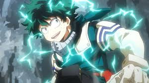
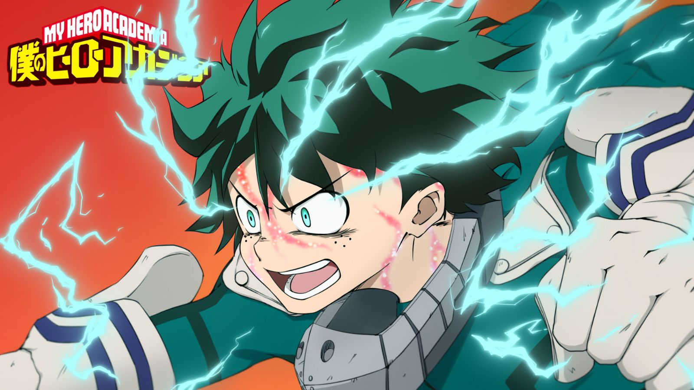

綠谷出久 介紹

從小嚮往捍衛正義的英雄，但在四歲那年的身體檢查時被醫生確認沒有任何“個性”，即沒有任何超能力，但他並沒有放棄成為英雄的夢想。
之後在機緣巧合下繼承了偶像歐爾麥特的「個性」One·for·All，並且考入雄英高中。

不擅長和女性交談，害羞時會用雙手摀住嘴嘟嘟囔囔的發言。
個性樂觀積極，甘於自我犧牲來幫助他人，曾捨身營救爆豪，因此具有一定的凝聚力，曾被同學飯田天哉稱作「更適合引導人們的人選」。有著強大的應變能力，在於爆豪的對戰更是體現出來。
最新消息
爆豪勝己
他小時候經常欺負沒有「個性」（超能力）的綠谷，然而在兩人都進入雄英高校後，爆豪逐漸對綠谷改觀。
轟焦凍
雄英高中英雄科1年A班保送生，擁有「半冷半燃」個性，右半身可釋放冷氣、左半身可製造火焰，但持續使用單一能力會導致凍傷或燒傷。
飯田天哉
英雄世家飯田家族的次子，渦輪英雄「英格尼姆」的親弟弟。其父母對其抱有很大的期待。從著名的私立聰明中學畢業，現為英雄科1年A班的班長。
歐爾麥特
One For All 第八代繼承者，從第七代持有者志村菜奈繼承。將「個性」讓渡於他人的「個性」，積累了多人的力量再傳承給下一人的個性，是「求救之聲與義勇之心交織而出的力之結晶」。